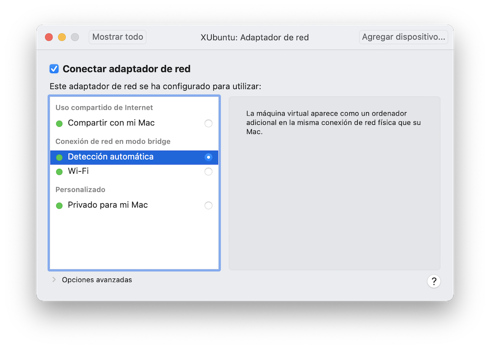

Creando una máquina virtual¶
Una máquina virtual es un programa especial capaz de simular el funcionamiento de un ordenador ficticio y mostrarlo en el escritorio de nuestra computadora:
Ambas máquinas, la física y la virtual, se ejecutan simultáneamente compartiendo los recursos del ordenador:
- crearemos un gran archivo que representa el disco de la máquina virtual
- la CPU tendrá que ejecutar simultáneamente los programas de ambas máquinas
- el escritorio de la máquina virtual se mostrará en una ventana, aunque podemos hacer que ocupe toda la pantalla, “tapando” el escritorio de la máquina física
- teclado y ratón son compartidos por ambos escritorios, de igual forma que hacemos cuando tenemos dos programas ejecutándose en ventanas separadas
- es posible arrastrar y soltar objetos de un escritorio a otro
- podremos compartir el portapapeles, copiando y pegando objetos de un ordenador a otro, el físico y el virtual
- también podremos compartir determinadas carpetas del disco físico, permitiendo acceder a ellas desde la máquina virtual, que los considerará como dispositivos externos, al igual que sucedería si insertamos un dispositivo USB.
A la máquina física se le llama Host, y a la virtual, Guest. Podemos tener varias máquinas virtuales Linux, Windows, Mac o cualquier otro sistema operativo contemplado por nuestro software de virtualización. ¿Tenemos un ordenador Mac y necesitamos ejecutar un programa para Windows? Lo podemos lograr creando una máquina virtual Windows, siempre que obtengamos un DVD de instalación descargándolo de la página web de Microsoft. También hay una versión especial para desarrolladores que consiste en un disco virtual con el sistema ya instalado, y que podemos descargar de aquí.
Pero no todo son ventajas, hay una desventaja importante. El esfuerzo a realizar por la CPU física se multiplica. Debe ejecutar los programas de ambas máquinas, y además debe hacer una traducción “al vuelo” de los programas de la máquina virtual para adaptarlos al formato de la física. Todo esto puede provocar una cierta disminución del rendimiento, aunque la posible ralentización suele ser inapreciable si tenemos un ordenador suficientemente potente. En el caso de aplicaciones multimedia, por ejemplo, podría notarse un poco.
Para tener máquinas virtuales necesitaremos un programa especial para gestionarlas. Si nuestro sistema operativo host es Windows, debemos saber que algunas versiones incluyen de serie un programa llamado Hyper V, que permite crear máquinas virtuales Windows y Linux.
Si lo que tenemos es un Mac, como es mi caso, Apple distribuye un programa de pago llamado Parallels.
Si lo que buscamos son soluciones válidas para cualquier sistema operativo Host, una de las más populares es VirtualBox, suministrada por Oracle para su libre descarga y uso de forma gratuita.
Otra alternativa muy popular es VMware. Es un producto comercial que tiene versiones gratuitas si el uso que le vamos a dar es personal. La versión para ordenadores Host Macinstosh es VMware Fusion, y la versión para Windows y Linux se llama Workstation Player. VMware no es software libre, pero proporciona mejor rendimiento que VirtualBox, y la posible ralentización de la máquina virtual es inapreciable.
En este cuaderno usaremos VMware Fusion en un ordenador Mac. En el caso de que nuestra máquina física sea Windows, la instalación y funcionamiento de VMware Workstation Player debería ser bastante parecida.
La página de VMware es: https://www.vmware.com. La empresa tiene un extenso catálogo de productos. Los que nos interesan están en:
Los manuales de producto están en:
En la imagen vemos la página correspondiente a Mac. En la barra lateral tenemos enlaces a dos tipos de documentos, Notas de la versión y Documentación del producto. Seleccionando la segunda opción veremos un documento titulado “como utilizar VMware Fusion”.
En la cabecera del documento hay un icono Descargar PDF, con el manual completo en ese formato.
Nota: para instalar VMware en Windows, seguir las instrucciones de VMware Workstation Player.
Instalar Fusion¶
Fusion se instala de la misma forma que otras aplicaciones Mac. Lo primero es descargar el archivo de instalación desde el sitio web de VMware. Primero tenemos que registrarnos en la página web, obteniendo una clave de usuario y contraseña.
Seguidamente descargamos el producto correspondiente a nuestro sistema operativo:
En el caso de Mac, el archivo descargado es una imagen de disco .dmg. Lo abrimos haciendo doble clic sobre el mismo:
Hacemos doble clic sobre el icono de la app. Para seguir adelante, se nos pedirá que introduzcamos nuestra contraseña de administrador de la máquina física. Seguidamente pulsamos en el botón para aceptar los términos de la licencia:
Debemos introducir nuestra clave de licencia de producto:
Como no tenemos una, pulsamos en el botón obtener clave de licencia. Esto nos lleva a la página web, donde tras identificarnos con nuestro código de usuario y contraseña (las que creamos para descargar el producto), visualizaremos de nuevo la página de descargas con la clave requerida. Tras introducir esa clave en el programa de instalación, pulsamos en el botón Continuar y seguimos el proceso. Finalmente se nos mostrará la ventana de diálogo para crear nuestra primera máquina virtual:
Por ahora vamos a pulsar en el botón Cancelar para cerrar el proceso. Comprobamos que tenemos VMWare en la carpeta de Aplicaciones.
Iniciar VMware¶
En un Mac, podemos iniciar VMware como cualquier otra aplicación, desde la carpeta de aplicaciones o desde el Dock.
VMWare muestra múltiples ventanas, tantas como máquinas viruales tengamos en ejecución, y una ventana adicional llamada “Biblioteca de máquinas virtuales”, donde se muestra una lista de máquinas y una imagen de cada una. Si no tenemos ninguna máquina virtual creada, veremos la lista vacía. En la siguiente imagen, ya hemos instalada una máquina virtual Ubuntu:
Si la ventana de “Biblioteca” está oculta, desde el menú de cualquier ventana de VMWare podemos visualizarla pulsando en la opción Ventana > Biblioteca de máquinas virtuales.
Una alternativa muy práctica es iniciar las máquinas virtuales desde un icono en la barra superior del escritorio del Mac:
Podemos activar esta posibilidad desde el menú de VMware Preferencias > General:

Seleccionamos: Menú de aplicaciones: Mostrar en la barra de menús y lo establecemos con el valor “Siempre”.
Pulsando en ese icono, podemos gobernar nuestras máquinas virtuales sin arrancar VMware manualmente.
Obtener el sistema operativo¶
Antes de crear nuestra primera máquina virtual, necesitamos descargar el disco de instalación del sistema operativo, en formato de disco virtual. Vamos a probar xubuntu, que es una versión de Ubuntu con escritorio Xfce. Su página web de descargas está en https://xubuntu.org/
Ubuntu publica una versión nueva cada seis meses. El número de versión está formado por el año y el mes. Por ejemplo, la 22.04 es la lanzada en abril de 2022. Cada dos años se lanza una versión especial LTS (en inglés, Long Term Support), más estable y con más tiempo de mantenimiento de actualizaciones a largo plazo. Para uso doméstico, podemos probar la versión más reciente, aunque no sea LTS. En la página web tendremos las descargas de ambas versiones.
Es importante que consultemos los requerimientos necesarios de nuestra máquina. Los tenemos en https://xubuntu.org/requirements/.
Necesitamos esta información para configurar la máquina virtual, asignándole los recursos que necesite:
Minimum system requirements:
To install and use Xubuntu, you need an Intel or AMD 64-bit processor with at least 1 GB of memory. You may need more if you have integrated graphics.
When you install Xubuntu, you need at minimum 8.6 GB of free space on your hard disk.
Recommended system resources:
To get a smooth experience when running multiple applications parallel on the desktop, it is recommended to have a 1.5Ghz Dual Core processor with at least 2 GB of memory.
It is recommended to have at least 20 GB of free space on your hard disk. This allows new application installations as well as saving your personal data on the hard disk in addition to the core system.
Nótese que estos requerimientos pueden cambiar con cada lanzamiento de una nueva versión.
Lo que se descarga es un archivo que sirve como “imagen de disco”. Tenemos dos opciones:
-
Usar algún programa para grabar un DVD físico a partir de esta imagen. Si tenemos un lector de DVD en nuestra computadora, instalar el sistema operativo a partir de ahí.
-
Tratándose de una máquina virtual, vamos a usar este archivo descargado como DVD virtual.
Crear una nueva máquina virtual¶
Tras obtener el DVD de instalación, iniciamos VMWare y pulsamos en el menú Archivo > Nuevo. Alternativamente, lo arrancamos desde el icono en la barra de menús, donde tendremos una opción de “Crear máquina nueva”. Se mostrará la siguiente ventana:
Pulsamos sobre la opción Crear máquina Virtual Personalizada. En el siguiente paso seleccionamos el tipo de sistema operativo a instalar:
Una de las cosas a virtualizar es el software BIOS que llevan todas las máquinas. Utilizamos la BIOS heredada de la máquina física:
Podemos crear un disco virtual nuevo o aprovechar uno ya existente (por ejemplo, el descargado de Windows). Los discos virtuales son en realidad un enorme archivo en nuestro disco físico:

Finalmente se muestra un resumen de la máquina a crear:
La máquina virtual se materializará en forma de archivo que “empaqueta” todos los componentes. Anters de pulsar en el botón [finalizar], lo hacemos en Personalizar configuración para cambiar la carpeta y el nombre del archivo a crear.
Una vez creada la máquina virtual, tendremos un nuevo archivo con el nombre y carpeta establecido. En la ventana de biblioteca de VMware se muestra en la lista de máquinas virtuales:
Podemos ponerla en marcha seleccionándola en la lista y pulsando en el menú Máquina Virtual > Arrancar, pero primero hay que configurar sus características.
Configurar la máquina virtual¶
El menú Preferencias de VMware cuenta con opciones que afectan al comportamiento general de VMware:
Si tenemos problemas de visualización, conviene revisar el apartado Pantalla:
Podemos configurar por separado el comportamiento de la máquina en dos situaciones distintas, cuando el escritorio se muestra en una ventana de la máquina física, o cuando ocupa toda la pantalla.
La opción ajustar máquina virtual a la pantalla significa que los contenidos se verán más grandes o más pequeños, sin modificar la resolución de la máquina virtual. El cambio de aspecto lo gestiona VMware.
La opción cambiar tamaño, por el contrario, modifica la resolución en la máquina virtual. A veces puede dar buenos resultados, pero en ocasiones, VMware “vuelve loco” al sistema operativo virtual, quien cree que está ejecutándose en una máquina física e intenta adaptarse a la resolución de la pantalla. En las de alta resolución, por ejemplo, puede que se vea todo muy pequeño. Por este motivo, si esta opción nos da problemas, es preferible apostar por la primera. Una vez instalado el sistema operativo, entraremos en la configuración de la máquina virtual y estableceremos a mano la resolución, dejándola a nuestro gusto.
Además de la configuración general de VMware, cada máquina virtual tiene la suya propia. Seleccionar la máquina en la biblioteca y pulsar en el menú Máquina Virtual > Configuración:
Veamos algunas opciones:
-
En el apartado CD/DVD, marcar “Conectar DVD” y seleccionar el disco virtual de instalación que hemos descargado de la página de XUbuntu.
Para volver a visualizar todas las opciones de configuración, pulsar en el botón Mostrar todo en la parte superior de la ventana.
-
En el apartado General podemos cambiar el nombre de la máquina y tipo de sistema operativo.
-
En el apartado Compartir establecemos las carpetas de la máquina física a las que tenemos acceso desde la virtual.
-
El apartado Procesador y Memoria permite asignar más memoria RAM a la máquina virtual, que se restará de la utilizada por la máquina física. El rendimiento de cada máquina se verá afectado por la cantidad de memoria asignada. Consultar los requerimientos del sistema operativo descargado.
-
En el apartado adaptador de red, comprobar que tenemos Internet activado.
-
El apartado del disco duro permite asignar más gigas al disco virtual.
-
En el apartado avanzado conviene activar el control del estado de la batería.
-
En el apartado pantalla podemos activar los gráficos 3D y la memoria asignada a la pantalla.
-
En el apartado disco de arranque podemos indicar el dispositivo al que acude la máquina virtual para cargar el sistema operativo. Típicamente suele ser el disco duro, pero para la instalación necesitamos que vaya al DVD.
-
En el apartado aislamiento comprobar que tenemos activado el uso de copiar y pegar de una máquina a la otra.
Conexión a Internet¶
Tratándose de una máquina virtual, la conexión a Internet, redes wifi, etc, se puede dejar resuelta en la máquina física. Todo lo que tenemos que hacer es asegurarnos de que hay conexión en el ordenador físico, y que la máquina virtual está configurada para beneficiarse de ello.
De esta forma, si por ejemplo queremos buscar una red wifi, podemos hacerlo en la máquina Host. De todas formas, VMWare puede proporcionar otras alternativas, que podemos ajustar en la configuración de la máquina virtual, apartado adaptador de red:

Espacio en el disco duro¶
En la máquina física se creará un enorme archivo como disco virtual, donde encerraremos toda la estructura de carpetas de la máquina virtual, pero también tenemos la opción de compartir determinadas carpetas de la máquina física, que en la máquina virtual se verán como si fueran dispositivos externos.
Para guardar documentos podemos utilizar una o varias carpetas compartidas, de forma que si desinstalamos la máquina virtual y todo su software, no perdamos esos archivos. Por este motivo, al configurar el disco virtual, no es necesario dedicarle un tamaño excesivo. Basta con lo necesario para instalar el software de la máquina virtual.
Iniciar la máquina virtual¶
El primer paso es asegurarnos de que el DVD virtual de instalación del sistema operativo esté siendo detectado por la máquina virtual. Para ello accedemos a la configuración, apartado CD/DVD:
Luego nos aseguramos de que el disco de arranque es el DVD. Acudimos a la configuración de la máquina virtual, apartado Disco de Arranque, y seleccionamos el DVD:
Seleccionada la máquina virtual, pulsamos en el menú “Máquina Virtual > Arrancar”. Tratándose del disco de instalación, XUbuntu comienza mostrando un menú en modo texto:
Como todavía no hemos iniciado Linux, este menú resulta bastante primitivo. Aquí no funciona el ratón. Hay que usar las teclas de flechas Up Down para seleccionar la primera opción y pulsar Enter para iniciar el sistema. Si no hacemos nada, pasados unos segundos se iniciará de forma automática, cargando el sistema operativo.
Tras un breve período de tiempo, se completa la carga del sistema operativo desde el DVD, se muestra un escritorio mínimo y se inicia el proceso de instalación en disco duro. Como primer paso, seleccionamos el idioma en la lista lateral:

Por ahora tenemos un disco virtual vacío, y un sistema operativo cargado desde el DVD virtual. A esto se le llama una sesión “Live”. Vamos a explorar un poco el funcionamiento de Linux. Pulsamos en el botón [Probar XUbuntu]. Se detiene el proceso de instalación y se muestra el escritorio de la sesión Live:
Pulsando en el icono de la esquina superior izquierda, se muestra el menú de aplicaciones:
Nótese que en la esquina inferior derecha del menú hay un botón para apagar la máquina virtual.
Vamos a acudir al apartado Internet y ejecutar el navegador web Firefox:
Tras navegar un poco por la red, podemos desplegar de nuevo el menú de aplicaciones y pulsar en el botón apagar. Se muestran varias opciones. Pulsamos en Apagar.
En el capítulo siguiente procederemos a instalar el sistema operativo en el disco duro virtual.
Teclado¶
Antes de instalar nada, conviene dejar resueltos los posibles conflictos entre “atajos de teclado” de ambas máquinas, aunque esto se puede dejar para más adelante.
En los ordenadore Mac se suele utilizar la combinación de teclas Cmd+Tab para saltar de una aplicación a otra. En otros sistemas operativos se usa la tecla Ctrl. Esto nos permite saltar de VMware a otras aplicaciones de la máquina física, y resulta especialmente útil si tenemos maximizada la ventana de VMware ocupando el escritorio virtual toda la pantalla.
Otra combinación de teclas especial es la que cierra una ventana. En la configuración general de VMware podemos establecer la acción a realizar, apagar la máquina o ponerla en suspenso.
También podemos “mapear” las pulsaciones de teclas. Lo encontraremos en la configuración general de VMware, apartado “Teclado y ratón”. Con esta utilidad podemos configurar el uso de “teclas rápidas”.